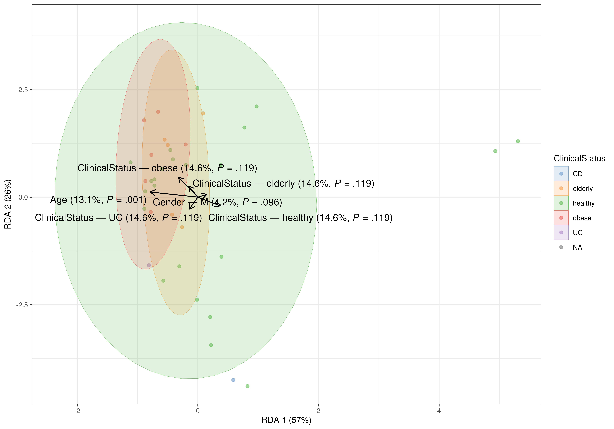
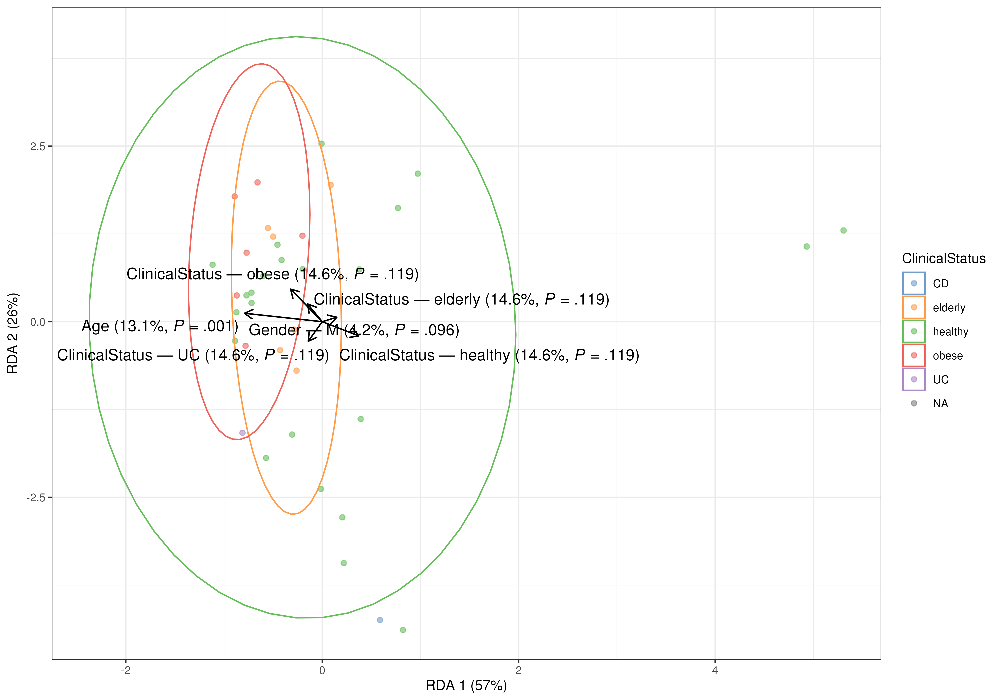
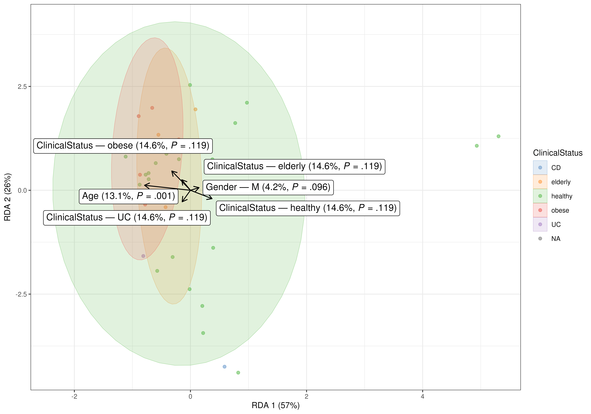
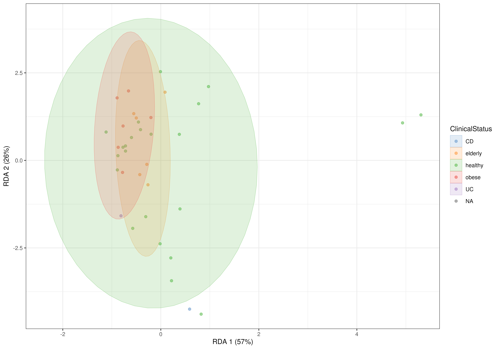
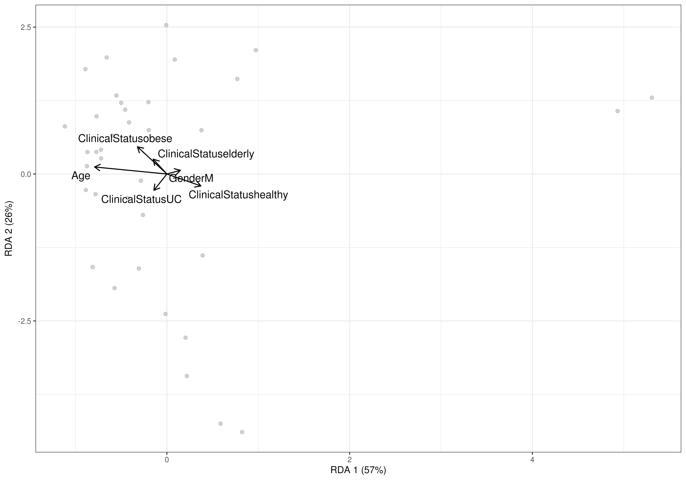

plotCCA.RdplotRDA and plotCCA create an RDA/CCA plot starting from the
output of CCA and RDA functions, two common methods
for supervised ordination of microbiome data.
plotCCA(object, ...)
# S4 method for class 'SingleCellExperiment'
plotCCA(object, dimred, ...)
# S4 method for class 'matrix'
plotCCA(object, ...)
plotRDA(object, ...)
# S4 method for class 'SingleCellExperiment'
plotRDA(
object,
dimred,
add.ellipse = TRUE,
ellipse.alpha = 0.2,
ellipse.linewidth = 0.1,
ellipse.linetype = 1,
confidence.level = 0.95,
vec.size = 0.5,
vec.color = vec.colour,
vec.colour = "black",
vec.linetype = 1,
arrow.size = 0.25,
label.color = label.colour,
label.colour = "black",
label.size = 4,
vec.text = TRUE,
repel.labels = TRUE,
sep.group = "—",
repl.underscore = " ",
add.significance = TRUE,
add.expl.var = TRUE,
add.vectors = TRUE,
parse.labels = TRUE,
...
)
# S4 method for class 'matrix'
plotRDA(object, ...)a
TreeSummarizedExperiment
or a matrix of weights. The latter is returned as output from getRDA.
additional parameters for plotting, inherited from
plotReducedDim,
geom_label and
geom_label_repel.
A string or integer scalar indicating the reduced dimension to
plot. This is the output of addRDA and resides in
reducedDim(tse, dimred).
One of c(TRUE, FALSE, "fill", "colour", "color"),
indicating whether ellipses should be present, absent, filled or colored.
(default: ellipse.fill = TRUE)
Number between 0 and 1 to adjust the opacity of ellipses.
(default: ellipse.alpha = 0.2)
Number specifying the size of ellipses.
(default: ellipse.linewidth = 0.1)
Discrete number specifying the style of ellipses.
(default: ellipse.linetype = 1)
Number between 0 and 1 to adjust confidence level.
(default: confidence.level = 0.95)
Number specifying the size of vectors.
(default: vec.size = 0.5)
Alias for vec.colour.
String specifying the colour of vectors.
(default: vec.color = "black")
Discrete number specifying the style of vector lines.
(default: vec.linetype = 1)
Number specifying the size of arrows.
(defaults: arrow.size = 0.25)
Alias for label.colour.
String specifying the colour of text and labels.
(default: label.color = "black")
Number specifying the size of text and labels.
(default: label.size = 4)
TRUE or FALSE, should text instead of labels be used to label vectors.
(default: vec.text = TRUE)
TRUE or FALSE, should labels be repelled.
(default: repel.labels = TRUE)
String specifying the separator used in the labels.
(default: sep.group = "\U2014")
String used to replace underscores in the labels.
(default: repl.underscore = " ")
TRUE or FALSE, should explained variance and p-value
appear in the labels. (default: add.significance = TRUE)
TRUE or FALSE, should explained variance appear on the
coordinate axes. (default: add.expl.var = TRUE)
TRUE or FALSE, should vectors appear in the plot.
(default: add.vectors = TRUE)
TRUE or FALSE, should labels be parsed.
(default: parse.labels = TRUE)
A ggplot2 object
plotRDA and plotCCA create an RDA/CCA plot starting from the
output of CCA and RDA functions, two common methods
for supervised ordination of microbiome data. Either a
TreeSummarizedExperiment
or a matrix object is supported as input. When the input is a
TreeSummarizedExperiment, this should contain the output of addRDA
in the reducedDim slot and the argument dimred needs to be defined.
When the input is a matrix, this should be returned as output from
getRDA. However, the first method is recommended because it provides
the option to adjust aesthetics to the colData variables through the
arguments inherited from plotReducedDim.
# Load dataset
library(miaViz)
data("enterotype", package = "mia")
tse <- enterotype
# Run RDA and store results into TreeSE
tse <- addRDA(tse,
formula = assay ~ ClinicalStatus + Gender + Age,
FUN = vegan::vegdist,
distance = "bray",
na.action = na.exclude)
# Create RDA plot coloured by variable
plotRDA(tse, "RDA",
colour_by = "ClinicalStatus")
#> Warning: Removed 243 rows containing non-finite outside the scale range
#> (`stat_ellipse()`).
#> Too few points to calculate an ellipse
#> Too few points to calculate an ellipse
#> Warning: Removed 243 rows containing missing values or values outside the scale range
#> (`geom_point()`).

# Create RDA plot with empty ellipses
plotRDA(tse, "RDA",
colour_by = "ClinicalStatus",
add.ellipse = "colour")
#> Warning: Removed 243 rows containing non-finite outside the scale range
#> (`stat_ellipse()`).
#> Too few points to calculate an ellipse
#> Too few points to calculate an ellipse
#> Warning: Removed 243 rows containing missing values or values outside the scale range
#> (`geom_point()`).

# Create RDA plot with text encased in labels
plotRDA(tse, "RDA",
colour_by = "ClinicalStatus",
vec.text = FALSE)
#> Warning: Removed 243 rows containing non-finite outside the scale range
#> (`stat_ellipse()`).
#> Too few points to calculate an ellipse
#> Too few points to calculate an ellipse
#> Warning: Removed 243 rows containing missing values or values outside the scale range
#> (`geom_point()`).

# Create RDA plot without repelling text
plotRDA(tse, "RDA",
colour_by = "ClinicalStatus",
repel.labels = FALSE)
#> Warning: Removed 243 rows containing non-finite outside the scale range
#> (`stat_ellipse()`).
#> Too few points to calculate an ellipse
#> Too few points to calculate an ellipse
#> Warning: Removed 243 rows containing missing values or values outside the scale range
#> (`geom_point()`).
# Create RDA plot without vectors
plotRDA(tse, "RDA",
colour_by = "ClinicalStatus",
add.vectors = FALSE)
#> Warning: 'add.vectors' is FALSE, so other arguments for vectors and labels will be disregarded.
#> Warning: Removed 243 rows containing non-finite outside the scale range
#> (`stat_ellipse()`).
#> Too few points to calculate an ellipse
#> Too few points to calculate an ellipse
#> Warning: Removed 243 rows containing missing values or values outside the scale range
#> (`geom_point()`).

# Calculate RDA as a separate object
rda_mat <- getRDA(tse,
formula = assay ~ ClinicalStatus + Gender + Age,
FUN = vegan::vegdist,
distance = "bray",
na.action = na.exclude)
# Create RDA plot from RDA matrix
plotRDA(rda_mat)
